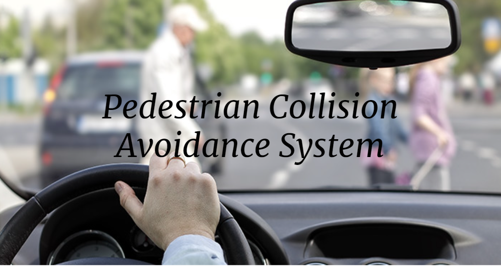

Background: A project developed at MSU in the CSE 435 course. Working with a real customer to produce a product.
Description: This project is focused on producing an Automated Pedestrian Collison Avoidance System. Autonomous driving is an area of intense interest by the automotive industry and the public. A self-driving car must be able to stay in its own lane, brake at intersections, and remain under control during these maneuvers. The system should be capable of exhibiting basic driving skills. Another fundamental aspect of the driving function is avoiding collisions in emergency situations. In this case this has to do with pedestrians.
 Betty H.C. Cheng CSE435 course pageRole: Project Manager.
Role: Web Developer
Role: Scribe
Role: Customer Liaison.
Role: Project Facilitator.
Please direct all questions to Dr. Betty H.C. Cheng at chengb@msu.edu
Link to Project Presentation BibliographyOur study led us to the conclusion that it would be preferable if the system only operated at speeds below 50 kph. We are doing this because we wanted to give the system a slightly more authentic feel. We discovered that, in practice, accuracy decreases as speed increases, and we wanted it to continue operating within the Mr. Capaldi-specified system parameters. The speed restriction for reliability is 50 kph since there are unforeseen variables like potholes and snowy roads that might affect how well the device works.
The plus or minus 2% deceleration and the other variables that may arise outside of this in actuality are the reasons why we are doing this for the stopping distance buffer. According to our study, a full stop before 1.5 meters from the pedestrian is a good enough range for the vehicle to safely stop; the pedestrian won't feel uncomfortable and will be safe.
While this (.7g) is not normally a driver-comfortable stopping speed, it will leave the pedestrian safe in the best possible way, according to Gs. The maximum deceleration that would still be acceptable for the driver is 0.7, which accomplishes the secondary objective of wasted time.
For the limitations, we must make the supposition that the area around the vehicle is ideal; otherwise, the system will not function. Additionally, we are only using this in the customer-provided situations or very comparable variations of these scenarios, and our last restriction is that there is zero danger that any hardware or software would malfunction. This does fit the definition of the ideal atmosphere, but we wanted to be clear that everything will function flawlessly.